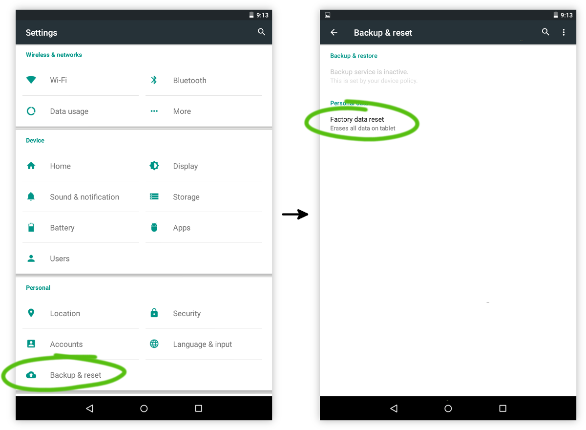
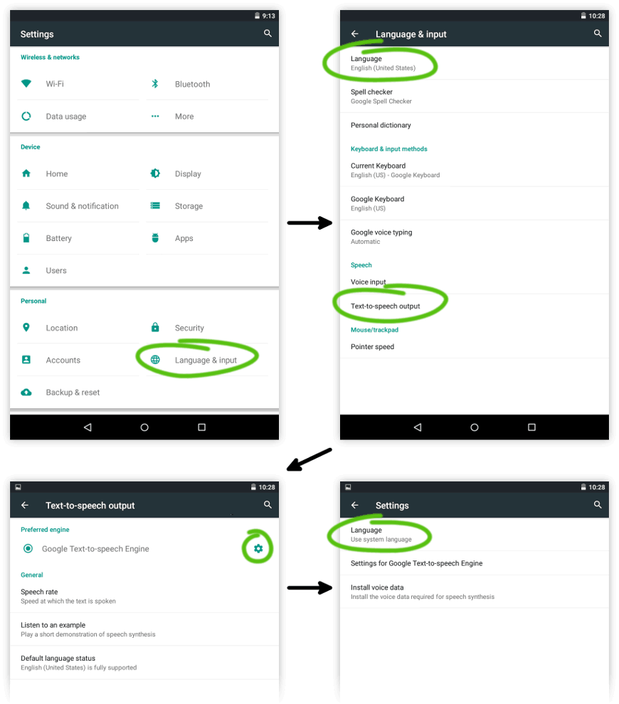
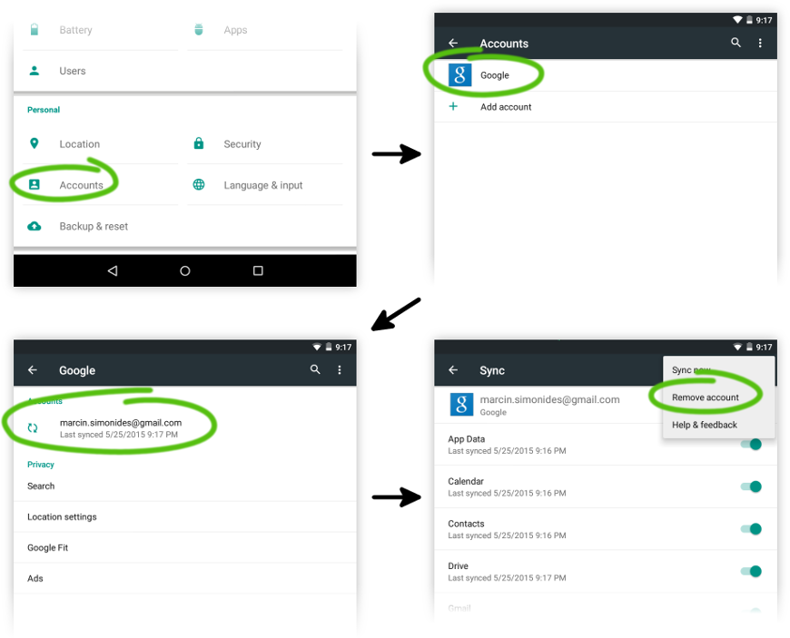

Here are the exact step needed to turn a tablet into a single-purpose audio book player (if you only wish to test the app, go here).
This guide is aimed at tech savvy people at this moment but I'm working on
making installation easier.
If you get stuck let me know and I'll help you.
It's recommended to remove all unnecesary software by performing a factory reset.
This step will delete all data on the device (but that's the goal :) ).
Go to Settings → Backup & reset → Factory data reset.
First make sure to set the device language to your language (the one audiobook titles are going to be in).
Next enable WiFi and download text-to-speech voice data for your language. Text-to-speech is used by Homer Player to read book titles.
Install the app from the Google Play Store.
Disable WiFi so that it doesn't drain the battery.
If you haven't performed a factory reset, disable all unnecessary applications
that may be running in the background.
In order for step 8 to succeed, you need to remove all the accounts registered in the system.
Go to Settings → Accounts and remove all the accounts.

The adb command is needed to perform the next step. The software installed
here can be uninstalled later.
Download and install the (unofficial) package from this post.
If you prefer, you can of course install the Android SDK Tools or even Android Studio but it's a bigger download and more work.
Install adb with the following command:
sudo apt-get install android-tools-adbDownload and install the Android SDK Tools.
You are a hacker now ;)
In order for Homer Player to take full control of the UI it needs to be given special privilege - it needs to be made a so-called device owner. This doesn't change the software in any way, it does not void the warranty and it can be easily reversed.
adb shell dpm set-device-owner com.studio4plus.homerplayer/.HomerPlayerDeviceAdmin
You should see:
Success: Device owner set to package com.studio4plus.homerplayerIf you don't, make sure you have performed step 6 above.
All you have to do now is copy some audiobooks and you're ready.
{% include copying_audiobooks.html %}If you want to make it easier to operate the device you can mark the buttons with color sticker paper or put it in a "smart cover" (one that automatically activates the tablet when opened).
Be sure to send me some feedback!